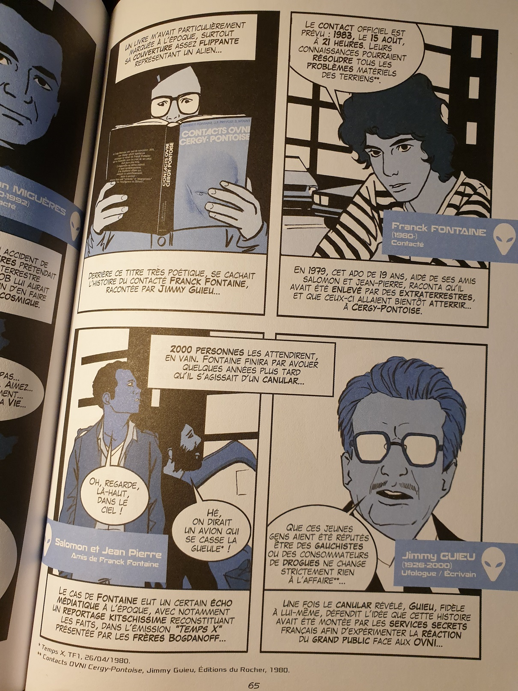
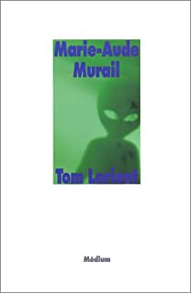

L’an dernier, je me suis jeté sur une BD autobiographique qu’il m’était impossible de laisser passer : J’ai vu les soucoupes, de Sandrine Kerion. L’autrice y raconte son adolescence au début des années 90’ et son obsession pour certaines théories du complot en vogue à l’époque. Elle nous raconte son histoire, la façon dont elle a progressivement sombré jusqu’à se persuader d’avoir vu des OVNI dans son quartier, tout en dressant un tableau complet et historique du phénomène. Si des facteurs personnels ont certainement pu jouer dans son parcours, notamment un environnement familial compliqué et du harcèlement scolaire hardcore, il est aussi question du rôle joué par la fiction (coucou Steven Spielberg) et, surtout, de médias français peu scrupuleux qui privilégient l’infotainment à la déontologie en invitant sur des plateaux de talk shows des personnalités dangereuses, pour s’en moquer certes, mais en leur donnant au passage une large visibilité. Mieux encore, Sandrine Kerion évoque les dérives sectaires qui peuvent découler du phénomène complotiste, mais également les liens entre certaines théories du complot encore bien vivaces et le racisme le plus crasse. Enfin, et c’est très important, l’autrice aborde la façon dont elle s’en est sortie.
Si cette BD m’intéresse tout particulièrement, c’est, pour commencer, parce qu’elle est très bien fichue : elle mêle habilement une histoire personnelle avec un fond documenté, précis, synthétique et bien raconté. Le dessin et le couleurs (tout en tons bleutés) m’ont surpris au début, mais collent tout à fait au propos. Cela dit, si ça m’a parlé, c’est aussi parce que j’ai moi-même, adolescent du début des années 2000, frôlé la même situation. Enfant, j’étais déjà attiré et effrayé par le sujet (l’idée de petits gris s’insinuant par la fenêtre de ma chambre pour venir m’enlever faisait partie de mes terreurs d’enfants), et j’ai progressivement mis la main sur quelques bouquins douteux (en quantité limitée, heureusement), avant d’avoir finalement accès à l’internet de l’époque (là où Sandrine Kerion avait plutôt accès à une bibliothèque familiale remplie d’ouvrages consacrés au paranormal). A l’époque, je dévorais aussi les livres de Bernard Werber, qui n’était pas le dernier pour brouiller sans scrupules les limites entre fiction et réalité. C’est donc tout naturellement que je suis allé sur sa page perso qui, de fil en aiguille, m’a dirigé vers un site complotiste aussi délirant que complet, mélangeant habilement actualité fiable et théories fumeuses, qui a bien failli me retourner complètement la tête. Pas merci Bernard : on ne s’étonnera pas que je m’en méfie comme de la peste depuis lors. Au final, être confronté à cet amoncellement délirant d’informations étranges se voulant convaincantes m’a peut-être forcé à y réfléchir et, paradoxalement, aidé à m’en sortir, mais je reste convaincu d’avoir été fondamentalement chanceux de ne pas y plonger tête la première.
Au lieu de régler mes comptes avec Bernard, je voudrais plutôt évoquer un roman destiné aux 11-13 ans qui, je pense, a pu jouer un rôle positif dans mon cas. Il s’agit de Tom Lorient, de Marie-Aude Murail, sorti en 1999. Mes souvenirs sont lointains, mais je me souviens très bien d’une histoire partant du postulat d’un enlèvement extra-terrestre pour dévier doucement vers une histoire bien plus terre-à-terre (dont je n’ai par contre aucun souvenir, vous me pardonnerez : c’était il y a plus de vingt ans). L’important c’est que, d’une certaine manière, ce roman m’a servi de démonstration que derrière de prétendus enlèvement extra-terrestres pouvaient se cacher des phénomènes très différents mais non moins dignes d’intérêt. Pour finir, je ne peux bien sûr que conseiller une fois encore la BD de Sandrine Kerion, à la fois riche et touchante. Enfin, à ceux qui voudraient s’intéresser aux théories du complot de façon plus approfondie, notamment leur dimension politique, c’est toujours une bonne idée de jeter un oeil aux travaux de Marie Peltier, autrice des ouvrages L’ère du complotisme : La maladie d’une société fracturée (2016) et Obsession : Dans les coulisses du récit complotiste (2018).